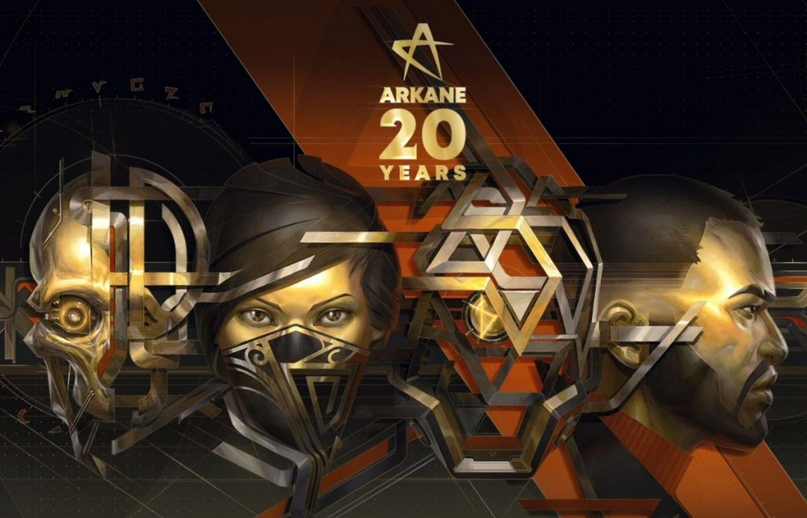
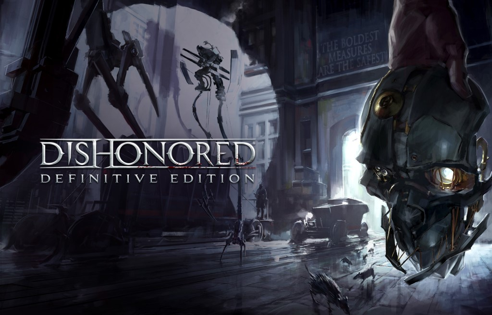
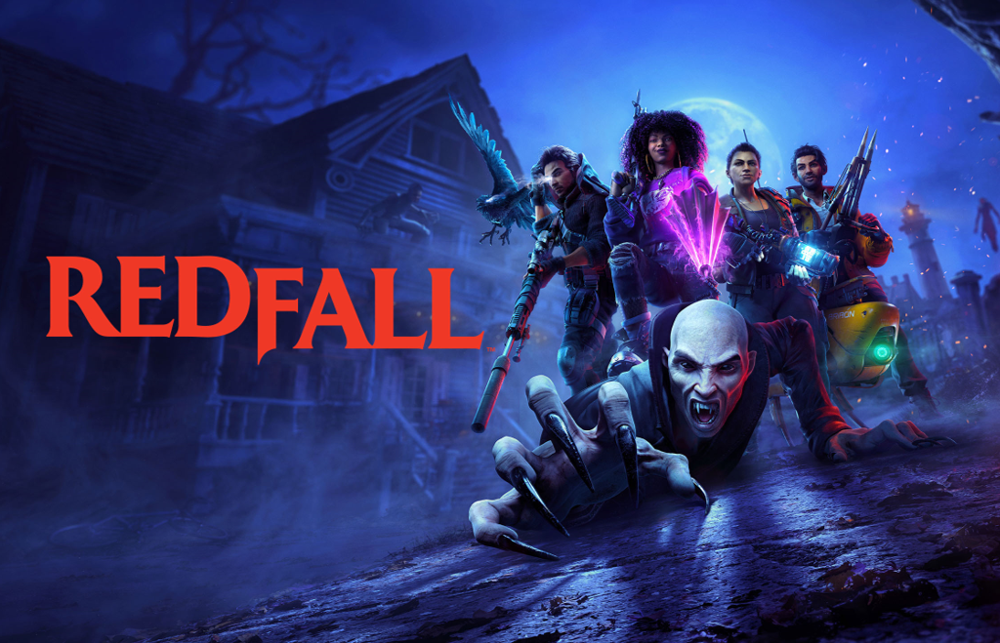
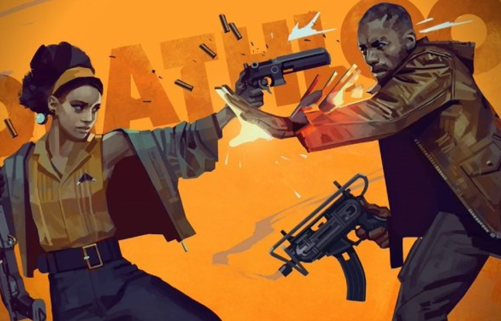
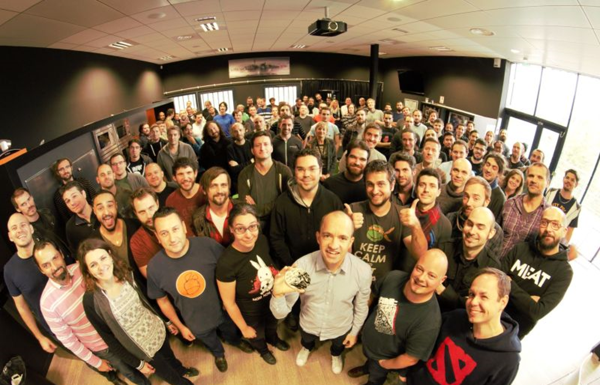

L'HISTOIRE D'ARKANE STUDIO
Des débuts prometteurs

Arkane studio est actuellement l’une des entreprises de Jeux Vidéos les plus importantes de France, à la 9ème place devant Don’t Nod Entertainment, une autre entreprise dont nous allons parler. Elle est également connue et reconnue mondialement, voulant créer une expérience de jeu unique et possédant le souci du détail.
Fondée en 1999 par d’anciens employés d’autres gros studios de développements, comme Electronics Art, Atari, Infogrames… sous la direction de Raphael Colantonio. Leurs diverses expériences respectives les aideront à créer rapidement leur premier jeu en 2002 : Arx Fatalis. Ce titre sera un premier succès mérité pour le studio et sera grandement encensé par la critique.
En 2006, Arkane ouvre un nouveau studio à Austin, et sort plus tard Dark Messiah of Migh and Magic, un nouveau jeu légèrement moins bien côté que le précédent malgré des critiques positives.
La montée de Arkane studio leur permettra de réaliser quelques partenariats, notamment un avec Electronic Arts. Ensemble, ils prévoient de sortir The Crossing, un titre qui sera malheureusement annulé sans raison officielle et qui ne sera jamais relancé. Cette annulation malgré un budget confortable ainsi que des créateurs extérieurs laissa penser à l’époque que Arkane avait atteint son apogée, mais cette période leur permettra d’étendre leurs partenariats.
En 2010 sort Bioshock 2, la suite de l’une des licences les plus rentables et les plus appréciées de 2K games, dont le level design a été fait par Arkane Studios ! En 2012, le studio produit Dishonored, l’une si ce n’est la licence la plus populaire du studio à l’heure actuelle. Quatre ans plus tard, en 2016 sort le second Dishonored, également très bien accueilli par la critique. Le titre aura amélioré les quelques défauts du premier opus tout en proposant un gameplay qui se renouvelle, une histoire toujours intéressante à suivre, mais il a un détail non négligeable… La présence de protagonistes féminines ! Et des qui ont leurs intérêts, contrairement à de trop nombreux personnages du jeux vidéo (Plus de détails partie II.2)


En 2017, Arkane sort successivement Prey et Dishonored : la mort de l’outsider. Deux jeux qui recevront des critiques très positives pour leur scénario, leur game design et leur gameplay. Les ventes seront également très positives.
En 2019 sortent Wolfenstein : Youngblood et Wolfenstein :Cyberpilot le même jour, certainement les premiers échecs du studio, les deux jeux auront une sensation de « bâclés », les scénarios étant bien plus anecdotiques et le gameplay peu intéressant, surtout comparé aux précédents titres.
Ces deux erreurs de parcours feront réfléchir Arkane, qui reverra sa stratégie : plus d’enchainement de jeu la même année, la qualité reprendra le dessus sur la quantité. Deux ans après sort deathloop, un jeu d’action aventure, un jeu qui sera, comme les grands jeux d’Arkane, unanimement encensé, pour son scénario, son gameplay, ses idées novatrices… Ce jeu marquera la reprise de la qualité chez Arkane.
Le prochain jeu du studio sera Redfall, un jeu d'action aventure que beaucoup attendent comme un nouveau grand titre. Il est actuellement prévu pour 2023.
Deux chiffres clé
L'effectif par année
Comme nous pouvons le voir sur le graphique à droite, le nombre d'employés d'Arkane a augmenté depuis ces dernières années, malgré une légère diminution en 2017. Cet effectif actuel classe Arkane en tant que moyenne entreprise. Cependant, certaines sources comme wikipédia estiment l'effectif actuel à plus de 200, ce qui en ferait une grande entreprise.
Jusqu’à aujourd’hui
Enfin, ce graphique à gauche présente le chiffre d'affaire d'Arkane par années, en milions d'euros. Les années les plus faibles en terme de chiffre d'affaire représentent deux années ou le jeu a été moins productif, 2019 correspond à un "échec", cependant 2020 est l'année de Deathloop, un bon succès vidéo ludique.
La place de la femme
Dans leur jeu...
Arkane est une entreprise qui tient énormément à l'égalité homme femme, et à ce titre, nous pouvosn régulièrement trouver des personnages importants voir principaux féminins au sein de leur divers titres. Leur présence diffère énormément des autres femmes que l'on peut trouver dans d'autres jeux, bien souvent des clichés. En effet, il n'est pas rare de trouver des personnages qualifiés de "garçons manqués", des femmes avec un physique attrayant et une personnalité classique ou encore une simple présence sans développement. Hors, chez Arkane, les femmes ont une place dans l'histoire, une personnalité propre, un développement... En résumé, elles ont le traitement de n'importe quel personnage.


Comme dans leur boite
Et ce constat s'applique également au sein des effectifs. En effet, Arkane Studio est connu pour le traitement des employés qui est extrêment positif et pour ce qu'ils mettent en place afin de favoriser l'égalité. En effet, Arkane Studio limitte les écarts de salaire entre les deux genres (environ 5%, non négligeable mais faible par rapport aux autres entreprises du milieu). De plus, les femmes bénéficient d’une augmentation l’année suivant une congé maternité, afin de les aider financièrement. Enfin, chez Arkane, tout le monde a statistiquement les mêmes chances de réussite.